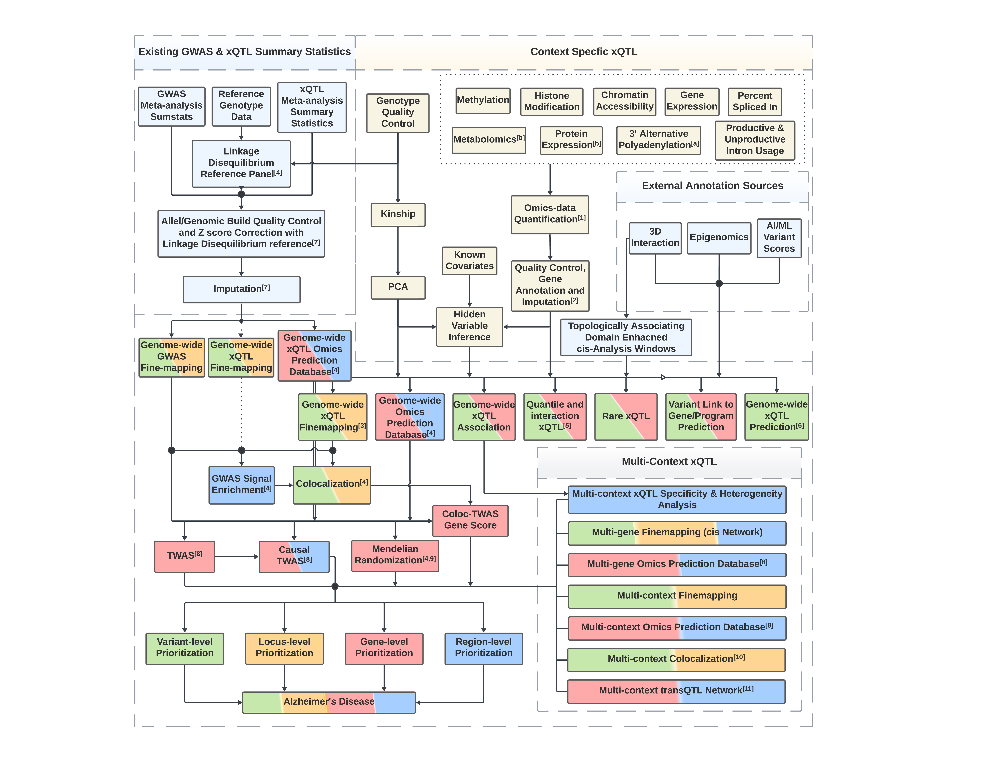

FunGen-xQTL Computational Protocol#
Developed for reproducible & reusable molecular QTL analyses for the NIH/NIA Alzheimer’s Disease Sequencing Project (ADSP) Functional Genomics xQTL (FunGen-xQTL) Project.

Getting started#
I want to… |
Go to |
|---|---|
Set up my computing environment |
|
Work out which pipelines I need |
Overview of the protocol#
Standardized reference data#
Reference data are standardized and curated by the ADSP FGC Standardization Workgroup in coordination with NIAGADS. Please find reference data specifications on ADSP Dashboard.
Software environment#
We use a set of packages from the Conda ecosystem to deploy our software. Most packages are from conda-forge and bioconda, along with a custom channel for software unavailable from those repositories. Installation is managed through pixi-setup; native support is provided for Linux and macOS (Intel and Apple Silicon), and Windows users will need Windows Subsystem for Linux (WSL).
Pipeline execution#
Pipelines in this repository are written in the Script of Scripts (SoS) workflow language. Like most other workflow languages, SoS workflows can distribute and execute computing jobs directly in High Performance Computing cluster. Unlike most other workflow languages, SoS workflows are created using SoS Notebooks (based on Ipython Notebook and developed in Jupyter) which allow for both scientific narrative and pipeline scripts in the same document. Unlike typical Jupyter Notebooks intended for interactive data analysis, SoS workflows written in Jupyter Notebooks can be executed directly as command line scripts either on a local computer or in an HPC environment.
We provide this toy example for running SoS pipeline on a typical HPC cluster environment. First time users are encouraged to try it out in order to help setting up the computational environment necessary to run the analysis in this protocol.
Source code#
Source code of pipelines implemented in this repository are available at statfungen/xqtl-protocol.
How to use the resource#
Organization of the resource#
The website https://statfungen.github.io/xqtl-protocol is generated from files
under the code folder of the source code repository. The pipeline folder
contains symbolic links automatically generated for pipeline files under code, so
analyses are run from the root of the repository by typing
sos run pipeline/<pipeline_file>.ipynb.
The logic of the entire xQTL analysis workflow is roughly reflected on the left sidebar:
Mini-protocols, represented as clickable, non-bold text under each analysis category, lead to specific notebooks detailing the commands necessary for the analyses defined in them. Predominantly tutorial-based, they are designed to be executed interactively in Jupyter or via the command and terminal, allowing users to navigate through the SoS pipelines step by step.
Mini-protocols can be expanded by clicking the downward arrows, revealing the SoS implementations of pipeline modules. These represent the crux of the pipeline implementations and are intended to be executed as command line software. They are also self-contained, allowing for reusability beyond the specific context of xQTL data analysis.
Example data#
Every module has example data committed under tests/fixtures/, subset to chr22 to
keep the repository small. These are the same files the test suite runs against, so
the commands shown in the documentation can be run directly after cloning – no
download required. Every path shown resolves either to one of these fixtures or to
the output directory of the step that produces it.
Large reference files – genome FASTA, GTF annotations, aligner indices, external LD panels – are not distributed with the repository and must be obtained separately; commands that need them show the expected path.
See Also#
Analyses from the FunGen-xQTL consortium using this protocol: cumc/xqtl-analysis
FunGen-xQTL data resources and results: statfungen/xqtl-resources
Our team#
This repository is developed by the Analysis Working Group of the NIA FunGen-xQTL consortium. Lead developers, contributors and leadership are listed here.